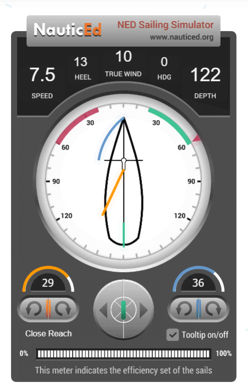

|
Ben's Guide to Sailing in Boston |
|
Ben's Guide to Sailing in Boston |
A short video to show how sailing works:
Here's a more comprehensive guide to handling a sailboat:
Find sailing courses Around Boston Here. Hover and click on the option that applies to you:
I Want To Learn To Sail
I Want To Teach People To Sail
Want a more interactive activity? Explore this online simulator to learn the basics of steering, parts of the sail, and how they all interact with the wind to determine the movement of the sailboat. 
Click on the picture below to
access it on a new tab: